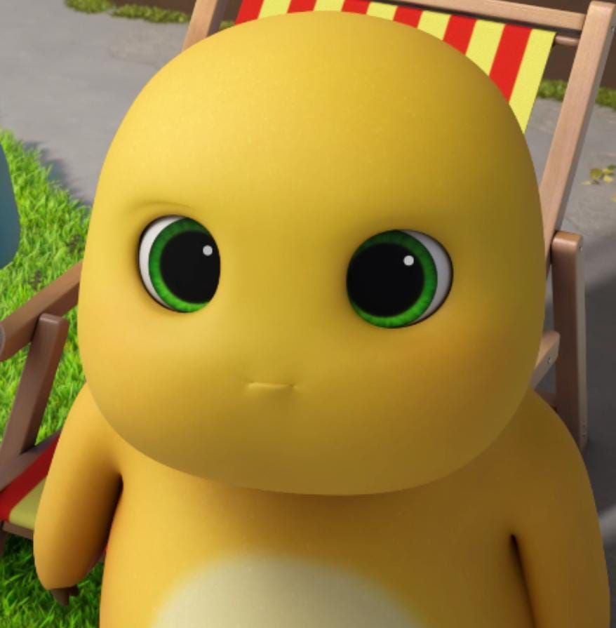

Our Journey Together
You’ve been such an amazing friend — with your hard work, your love for 🧡orange🧡, and of course your iconic Nailong obsession 🦖!
Do you remember when we first talked in the group angkatan about Zepeto? xD That was so cute ngl — we went from that first chat to becoming friends, joining a bigger circle, and now it's just the four of us :>


There are so many memories I couldn’t even fit all of them here... 🥹 Every laugh, every late-night call, every random adventure — they all mean so much to me. I’m so grateful for every single moment we shared, and I wouldn’t trade them for anything. Here’s to all the memories we made and all the ones we’ll make in the future. 🧡✨